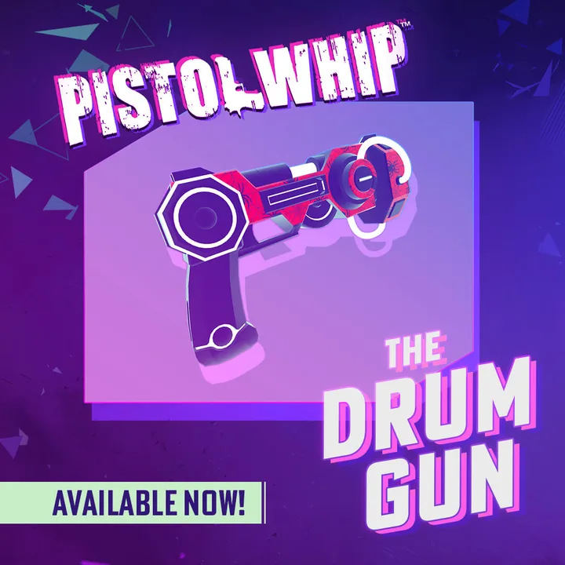

01What I owned
Pistol Whip is an ongoing VR rhythm-shooter, and I was its Game Director. I was responsible for everything overall, with a focus on the smaller design team of four to five.
- New gameplay mechanics and modifiers
- New onboarding and tutorialization, and a UX refresh
- New music genres and visuals, including finding and contacting artists directly for the contracts
- Reward and progression design across seasonal content updates
- The community level tools, Pistol Mix
- How we approached marketing and communication
- Supporting the team and pushing them in their contributions
02Growing the game
I was responsible for planning the new content releases and improvements that were added to the game. After its release the goal was to keep supporting the game with additional content and to keep those releases free, which generated a lot of goodwill with our loyal community.

Alongside the steady stream of new levels, I pushed the music into genres Pistol Whip had never had before. I hunted down those artists and reached out to them directly for the contracts.
New modifiers and weapons gave players new ways to play. Deflector let you hit bullets and reflect them back at enemies, for added challenge. The Drum Gun, our music gun, changed the firing sound to different drum kit sounds depending on how you held the gun, so you could play along with the music.
Deflector
01An enemy's bullet comes in.
02You take a swing.
03The bullet goes back at them.
Drum Gun
01Shot.
02Hit.
03Reload. Shot, hit and reload: a different sound each.
04Moving your hand changes the sound of your shots.

Through all of it I worked to stay true to the raw simplicity of the base game.
Release notes
Releases while I was Game Director
-
December 2022
Winter Roadmap and Holiday Update
A roadmap for 2023 (Pico 4, PS VR2, an official modding tool and a series of new Scenes), alongside a holiday update of quality-of-life improvements for a more comfortable and intuitive experience.
-
April – June 2023
Pistol Mix
An open beta of the official modding tool began in April. It launched in full in June on Steam and Mod.io, with community-made Scenes playable in the game on select headsets, alongside localization into seven languages.
-
May 2023
Overdrive Season
A free Season of five new Scenes, with a new one dropping each month through the summer.
-
October 2023
Elixir of Madness!
Three new Scenes that brought a whole new genre of music to the game, electroswing, plus three new modifiers (Graze, Glitch and a laser pointer) and interactable props.
-
November 2023
Drum Gun
A surprise anniversary update for four years of Pistol Whip. The Drum Gun is a new weapon where each shot, hit or reload makes a different sound, and moving your hand changes the sound of your shots. Three more weapons came with it.
-
June 2024
Voidslayer
A power metal collection of three new Scenes, and two new modifiers: Deflector, which lets you swing at bullets and send them back at enemies, and Colour Match.
03Pistol Mix
The decision
How do players make levels?
There was already an enthusiastic community, and we wanted to celebrate it.
One early idea of mine was to "play to create": you would run through blank levels and shoot where you wanted enemies or props to appear. We had to pass on it, for the reasons above.
Concept sketch · never built
"Play to create"
01A blank level.
02You shoot where you want an enemy or prop.
03It appears where you shot.
A free PC tool felt like the strongest option after that, because the most passionate level modders were PC players. I called it Pistol Mix, as a nod to song remixes: it lets players take existing content and remix the levels in new and creative ways.

The community liked and received the tool well. They have released well over 500 remixes, far more than the 45 levels we released over the years.